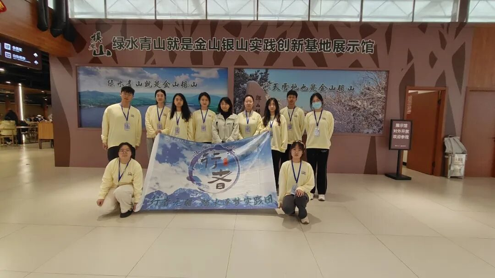
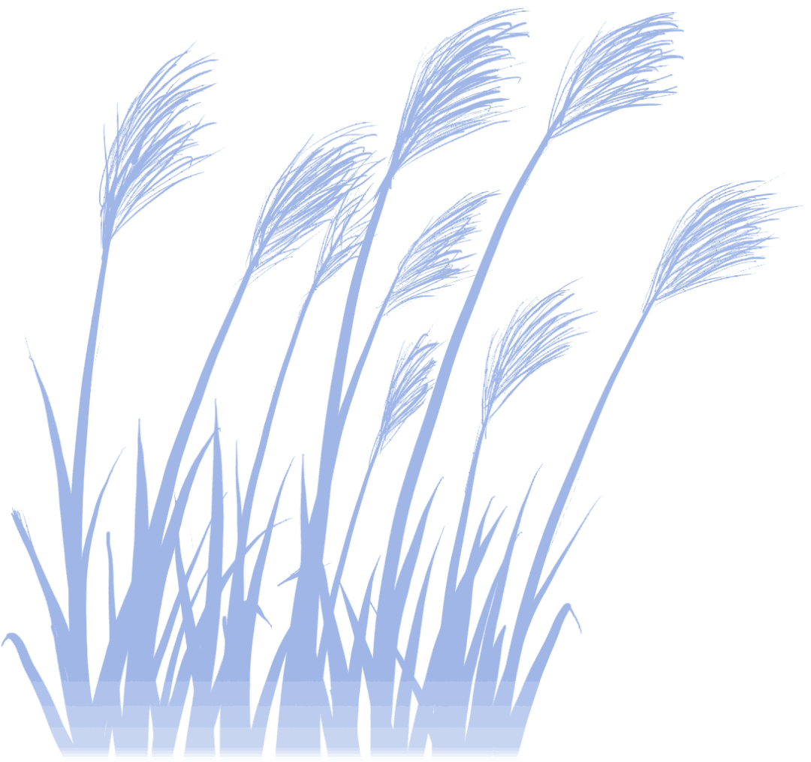
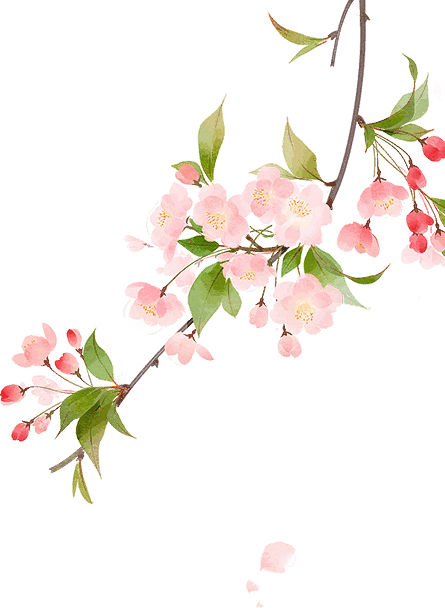
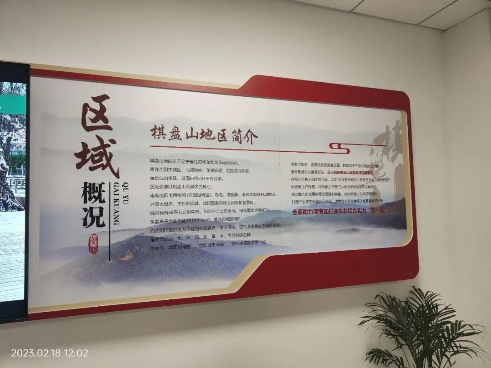
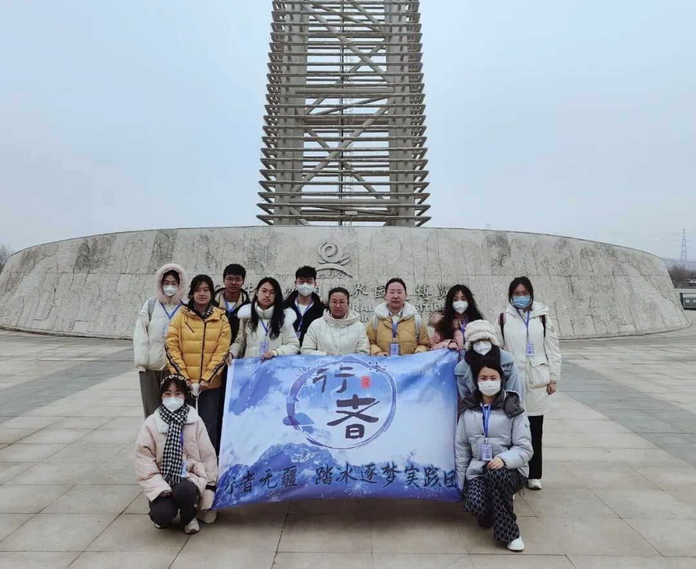

绿水青山 冰天雪地


绿水青山
冰天雪地
沈阳之旅的最后一天，行者们前往棋盘山，参观了5A级景区“沈阳世博园”和大型冰雪旅游胜地“棋盘山冰雪大世界”，开启了生态与文化之旅，体验绿水青山，感受冰天雪地。

当黎明的曙光揭去夜幕的轻纱，万里碧空中飘着几朵悠闲的白云，行者们就已经向世博园出发，到达目的地后，由世博园办公室主任张姝女士带领我们参观讲解。园内百合塔、凤之翼、玫瑰园为标志性主题建筑，荟萃国内外重点城市的园林及建筑精品。张姝女士着重带领我们参观了玫瑰园，占地面积10000平方米，在国内率先采用了地源热泵采暖技术，及节能又环保，即使室外是冰天雪地，玫瑰园内依然温暖如春。园内花卉让人应接不暇，如同繁星点缀，色彩缤纷。

山不在高，有仙则名，水不在深，有龙则灵。从万物复苏，百媚千红的世博园移步到银装素裹的棋盘山，冰雪世界森林茂密，山峦起伏，冰面辽阔，占地50万平方米。这里雪花飞舞，万物皆白，一派雪域风情。

棋盘山冰雪大世界项目丰富，设施完备，已开办30余项特色活动项目。付晶微老师为我们介绍了棋盘山旅游行业的发展理念与冰雪运动，付老师告诉我们，滑雪场地的人造雪来源于秀湖水，雪化了以后又回到秀湖，如此循环往复，体现了人类与生态共生的理念，既满足需求，又保护了环境。异于其他滑雪场所，棋盘山冰雪大世界不仅冬季对外开放，春夏秋也有相应的活动项目，使其得到了充分利用。

绿水青山就是金山银山，冰天雪地也是金山银山。坚持以文塑旅，以旅彰文，推进文化和旅游深度融合发展，促进人与自然和谐共生。生态文明建设任重道远，道阻且长，坚持生态优先、绿色发展理念，积极探索新路径、新方式。


行
者
这个冬天我们一起踏冰逐梦！
来源 | 行者无疆实践团
图片 | 行者无疆实践团
文字 | 徐晓彤
排版 | 张霖茜
审核 | 崔雨琪